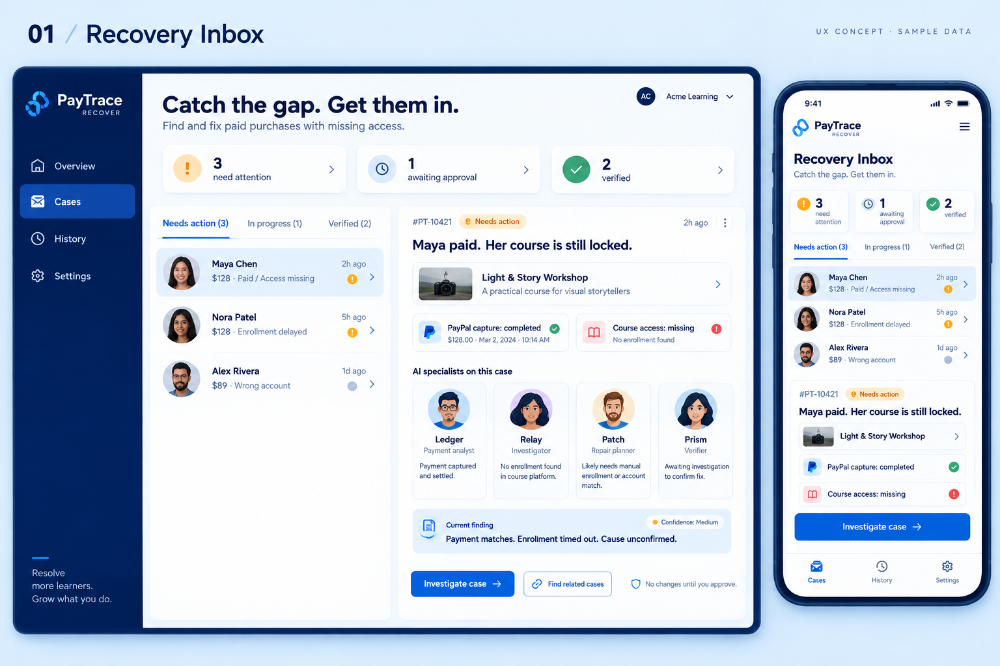

PRODUCT EXPLORATION / 01—03
See the recovery.
Shape the experience.
Three ways to help a merchant turn “I paid, but I can’t get in” into a checked outcome.


01 / START HERE
A home for every unfinished purchase.
Prioritize customers who need help, see payment and access side by side, and open the next investigation from one focused inbox.
OUR RECOMMENDED DIRECTION
One product. Three connected moments.
Spot the gap.
Start in the inbox. Identify the purchase and the customer who needs help.
02 / INVESTIGATEFollow the facts.
Connect payment, enrollment, and access. Let the specialists explain their evidence.
03 / RECOVERApprove. Then verify.
Preview a precise change, approve it, and check access before drafting a response.
These images explore a future interface; controls inside the images are not interactive. People, records, dates, and platform names are fictional examples. Generated wording will be refined before implementation. A timeout does not establish its cause, and verification should name the checks that actually passed.
Explore the functioning prototype ↗